n8n Class — Local Server Setup
Course materials for running n8n as a local server on your own machine, then opening the web UI from another device on the same LAN (phone, laptop, classroom tablet).
This matches a headless Linux host setup (no local GUI). Docker / Podman is the supported path.
After setup:
- Exercises 1A–1E — OpenAI-only path on n8n’s Chat UI: raw chat → harness → RAG → local-tool agent → tiny memory window + compaction
- Exercise 2 — same bot idea on Telegram via polling (no tunnel; Telegram only — no tools yet)
- Exercise 3 — add external tools: weather, Wikipedia, Exa, Google (HTTP)
Model provider note: The step-by-step examples below use OpenAI (API key from platform.openai.com). That is an example only. The same patterns work with Ollama (local) or Claude / Anthropic — in n8n, swap the chat model / embeddings node (e.g. Ollama Chat Model, Anthropic Chat Model, Embeddings OpenAI → the matching embeddings node if you use RAG). Screenshots and field names in this README assume OpenAI so the class stays consistent.
Exa + Google (Exercise 3 only) need their own free-tier keys.
What you will end up with
| Item | Value |
|---|---|
| UI URL (from another device) | http://YOUR_LAN_IP:5678 |
| Default port | 5678 |
| Data on disk | ./data next to docker-compose.yml |
| Image | docker.io/n8nio/n8n:latest |
Replace YOUR_LAN_IP with something like 192.168.1.247 — never use localhost or 127.0.0.1 when opening the UI from another device.
Prerequisites
- A Linux (or macOS) machine that stays on during class.
- Docker or Podman with Compose.
- The machine and your browser device on the same LAN.
- Outbound internet once (to pull the n8n image).
Check tools:
docker --version || podman --version
docker compose version || podman compose version || docker-compose --versionOn some Ubuntu systems, docker is an alias for Podman. That is fine for this class.
1. Get this repo
git clone git@github.com:Decentricity/n8n-class.git
cd n8n-classOr with HTTPS:
git clone https://github.com/Decentricity/n8n-class.git
cd n8n-class2. Find your LAN IP
On the server machine:
hostname -I | awk '{print $1}'Or:
ip -4 route get 1.1.1.1 | awk '{print $7; exit}'Write that IP down. Example used in this document: 192.168.1.247.
Confirm the interface that owns the default route (ethernet is usually more stable than Wi‑Fi in class):
ip route get 1.1.1.13. Create your .env
cp .env.example .envEdit .env and set your LAN IP in all three places (N8N_HOST, WEBHOOK_URL, N8N_EDITOR_BASE_URL):
nano .envExample of a finished .env:
N8N_HOST=192.168.1.247
N8N_PORT=5678
N8N_PROTOCOL=http
WEBHOOK_URL=http://192.168.1.247:5678/
N8N_EDITOR_BASE_URL=http://192.168.1.247:5678/
N8N_SECURE_COOKIE=false
GENERIC_TIMEZONE=Asia/Jakarta
TZ=Asia/JakartaWhy these matter:
WEBHOOK_URL/N8N_EDITOR_BASE_URL— so webhook links and the editor use the LAN address, notlocalhost.N8N_SECURE_COOKIE=false— required when you use plainhttp://so the browser can keep your login session.- Do not commit
.env(it is gitignored). Keep the example file updated instead.
4. Create the data directory (and fix permissions if needed)
mkdir -p datan8n inside the container usually runs as UID 1000. If you see EACCES: permission denied on /home/node/.n8n/config, fix ownership:
Docker:
sudo chown -R 1000:1000 dataRootless Podman:
podman unshare chown -R 1000:1000 data5. Start n8n
From the repo root:
docker compose up -dIf your system uses Podman Compose:
podman compose up -dPull + first start can take a minute. Watch logs:
docker compose logs -f
# or
podman logs -f n8nYou want a line like:
Editor is now accessible via:
http://YOUR_LAN_IP:5678Health check from the server:
curl -sS http://127.0.0.1:5678/healthzExpected:
{"status":"ok"}Also test the LAN address from the server:
curl -sS http://YOUR_LAN_IP:5678/healthz6. Open the UI from another device (headless server)
On a phone or laptop on the same LAN, open a browser and go to:
http://YOUR_LAN_IP:5678Example:
http://192.168.1.247:5678First visit: create the owner account (email + password). Store that password somewhere safe for the class.
If the page does not load:
- Confirm both devices are on the same subnet (
192.168.1.xwith192.168.1.x, etc.). - Confirm n8n is listening:
ss -tlnp | grep 5678 - Temporarily disable VPN on either device if it isolates LAN traffic.
- Re-check
.envIPs match the server’s current LAN IP (Wi‑Fi vs ethernet can differ).
7. License key (optional / if your class uses one)
- In the n8n UI, paste the license key where prompted.
- Restart so the license is fully reloaded:
docker compose restart
# or
podman restart n8n- Confirm healthy again:
curl -sS http://127.0.0.1:5678/healthzIn logs you should see a license line with isValid=true.
8. Everyday commands
| Goal | Command |
|---|---|
| Start | docker compose up -d |
| Stop | docker compose down |
| Restart | docker compose restart |
| Logs | docker compose logs -f |
| Status | docker compose ps |
Podman equivalents: podman start n8n, podman stop n8n, podman restart n8n, podman logs -f n8n.
Workflows and credentials live under ./data. Do not delete that folder unless you intend to wipe the class instance.
9. Optional — start on boot (Linux user systemd + Podman)
If the container already exists (created once with Compose or podman run), you can enable a user unit:
mkdir -p ~/.config/systemd/userCreate ~/.config/systemd/user/n8n.service:
[Unit]
Description=n8n workflow automation
After=network-online.target
Wants=network-online.target
[Service]
Type=oneshot
RemainAfterExit=yes
ExecStart=/usr/bin/podman start n8n
ExecStop=/usr/bin/podman stop n8n
TimeoutStartSec=120
[Install]
WantedBy=default.targetEnable it:
systemctl --user daemon-reload
systemctl --user enable --now n8n.service
loginctl enable-linger "$USER"For Docker Compose on boot, prefer enabling Docker itself and using restart: unless-stopped in docker-compose.yml (already set).
10. One-shot podman run (no Compose)
Useful if Compose is unavailable. Replace the IP and path:
mkdir -p "$HOME/.local/share/n8n/data"
podman unshare chown -R 1000:1000 "$HOME/.local/share/n8n/data"
podman run -d \
--name n8n \
--restart unless-stopped \
-p 5678:5678 \
-e N8N_HOST=192.168.1.247 \
-e N8N_PORT=5678 \
-e N8N_PROTOCOL=http \
-e WEBHOOK_URL=http://192.168.1.247:5678/ \
-e N8N_EDITOR_BASE_URL=http://192.168.1.247:5678/ \
-e N8N_SECURE_COOKIE=false \
-e GENERIC_TIMEZONE=Asia/Jakarta \
-e TZ=Asia/Jakarta \
-v "$HOME/.local/share/n8n/data:/home/node/.n8n:Z" \
docker.io/n8nio/n8n:latestThen open http://192.168.1.247:5678 from another LAN device.
Classroom checklist (setup)
Exercises
UI walkthrough screenshots
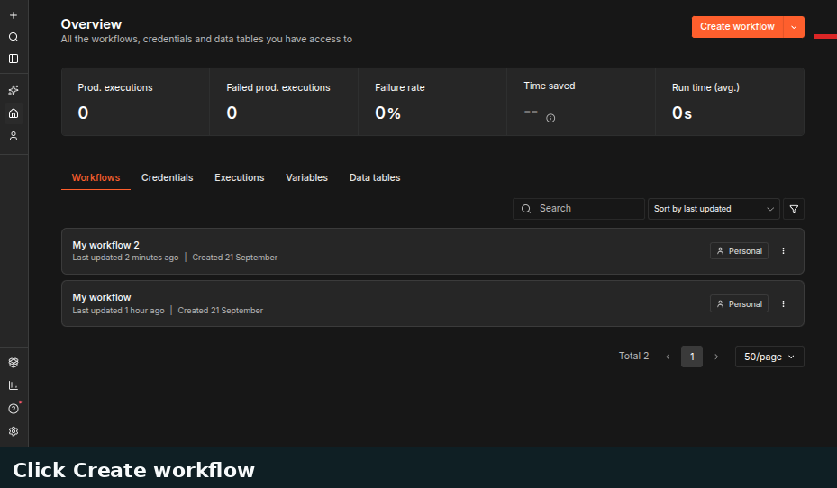
Start from Overview — click Create workflow.
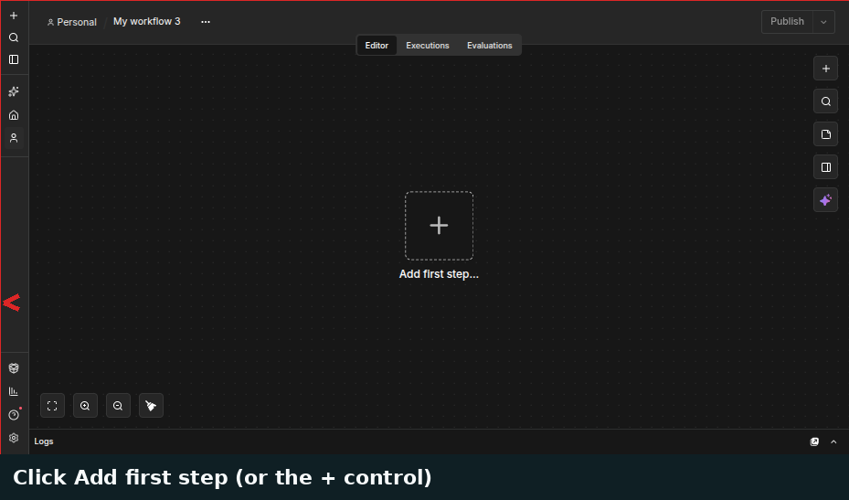
Empty canvas — click Add first step.
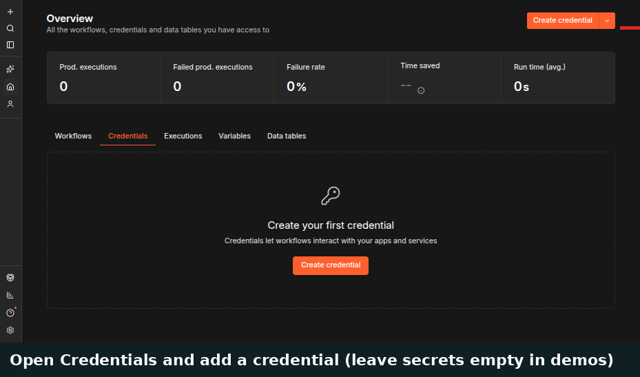
Credentials page — add credentials here later (never paste secrets into screenshots).
Model provider (read once)
These early exercises teach harness patterns, not a specific vendor.
| In the README examples | You may substitute |
|---|---|
| OpenAI Chat Model / OpenAI Message a model | Ollama Chat Model, Anthropic Chat Model (Claude), etc. |
| Embeddings OpenAI (Exercise 1C) | Matching embeddings for your stack (e.g. Ollama embeddings), or keep OpenAI embeddings even if chat is elsewhere |
Create the matching Credential in n8n for whatever you pick. Class demos and click paths below stay on OpenAI so everyone can follow the same screens.
Exercise 1A — Talk to a model via n8n’s Chat UI
Goal: Build the smallest useful chat workflow: type in n8n’s built-in chat panel and get a model reply.
Important: Chat Trigger is not Slack, WhatsApp, or your company website. It only drives n8n’s own Open chat UI inside the editor.
APIs: OpenAI only in the example (or Ollama / Claude if you swapped the model node). No other APIs.
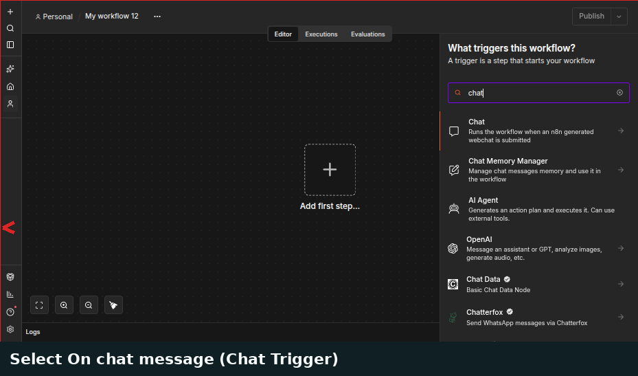
Search chat and select On chat message / Chat Trigger.
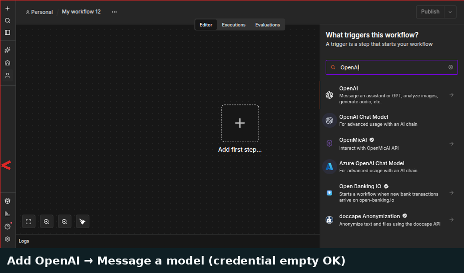
Search OpenAI / Message a model (leave credential empty in class screenshots).
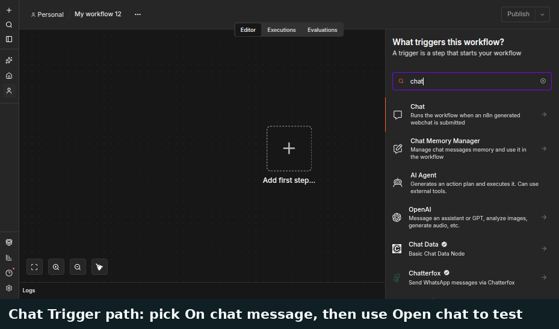
Use Open chat after the Chat Trigger is on the canvas.
What you need
- n8n open in the browser (
http://YOUR_LAN_IP:5678) - An OpenAI API key (platform.openai.com → API keys) — or Ollama running locally / an Anthropic key if you are not following the OpenAI example
Step by step
- Click Create workflow.
- Click the workflow name at the top and rename it, e.g.
Exercise 1A — Basic Chat. - Click Add first step (or the big +).
- Search for Chat Trigger → click When chat message received.
- Click the + on the right of that node.
- Search for OpenAI → click Message a model
(If using Ollama/Claude instead: add Ollama Chat Model or Anthropic Chat Model / Message-style node and connect it the same way.) - Under Credential to connect with → Create new → paste your OpenAI API key → Save.
- Choose a model (e.g.
gpt-4o-mini). - In the Prompt / Message field, map the text from Chat Trigger:
- open the field → use the mapping / expression UI
- pick the chat message (often
{{ $json.chatInput }})
- Click Save (top right).
- Click Open chat and type:
Say hello in one sentence.
You should see a model reply in that same panel.
Remember
Create workflow → Chat Trigger → OpenAI Message a model → Save → Open chatDone when
What you just learned
Calling a model once with no system prompt, no memory, and no tools — a raw completion wrapped in n8n’s Chat UI.
Exercise 1B — Chatbot harness (persona + memory)
Goal: Turn 1A into a small product-like harness: a fixed system prompt (persona / rules) plus memory so turn 2 remembers turn 1.
Concepts: harness vs raw call, system vs user message, multi-turn state.
APIs: Still only your chat provider (OpenAI in the example). Memory is stored by n8n.
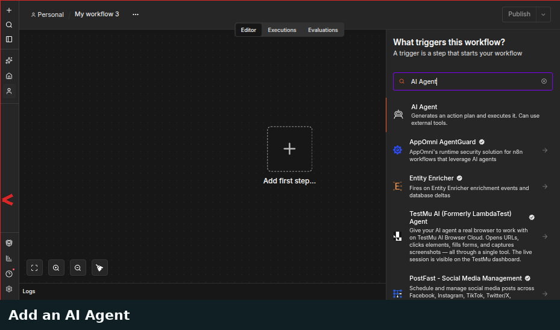
Add an AI Agent.
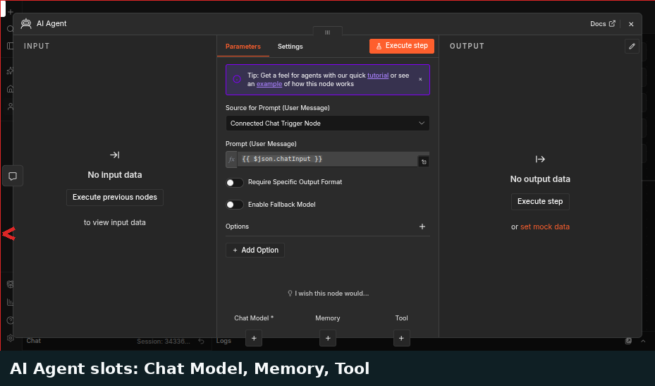
Agent slots: Chat Model, Memory, Tool.
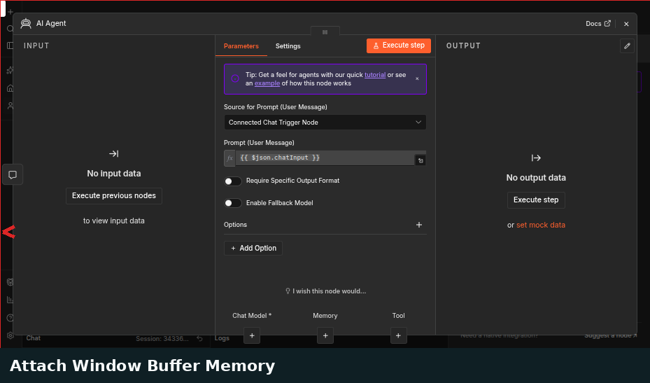
Attach Window Buffer Memory.
What you need
- Exercise 1A done (you already have a chat credential)
Step by step
- Duplicate your 1A workflow (or create a new one) → rename to
Exercise 1B — Harness + Memory. - Keep Chat Trigger as the first step.
- Delete the simple Message a model node if you are rebuilding; add AI Agent instead (search AI Agent).
- Connect: Chat Trigger → AI Agent.
- On AI Agent:
- Source for Prompt / User Message: map
{{ $json.chatInput }}from Chat Trigger. - Open Options (or System Message field) and set a System Message, for example:
- Source for Prompt / User Message: map
You are "Ayu", a friendly helpdesk assistant for a fictional company called Nusa Widgets.
Rules:
- Be concise (2–4 short sentences).
- If you do not know something, say so.
- Never invent order IDs or prices.
- Always sign the last line with: — Ayu, Nusa Widgets- On the AI Agent, click + under Chat Model → OpenAI Chat Model
→ same OpenAI credential → model e.g.gpt-4o-mini
(Or Ollama / Anthropic chat model.) - On the AI Agent, click + under Memory → Window Buffer Memory (sometimes labeled Simple Memory / Buffer Window).
- Session key: use the Chat Trigger session id if shown (often available from the trigger), or the default session — the important part is that the same Open chat panel reuses one memory.
- Context window length: e.g. 10 messages.
- Do not add tools yet.
- Save → Open chat.
Test script (say these in order in the same chat panel)
Hi! My name is Budi and my favorite color is blue.What is my name and favorite color?Who are you and which company do you work for?
Expected: it remembers Budi / blue, stays in character as Ayu, and follows the signature rule.
Remember
Chat Trigger → AI Agent
├─ Chat Model (OpenAI / Ollama / Claude)
└─ Window Buffer Memory
(+ System Message = persona)Done when
What you just learned
A chatbot harness = model + instructions + state (memory).
Exercise 1C — RAG (retrieve, then answer)
Goal: Ground answers in a small company FAQ you provide. Use embeddings + an in-memory vector store, then answer only from retrieved text.
Concepts: RAG vs “the model just knows,” embeddings, chunking, retrieval-augmented generation, reducing hallucination.
APIs: OpenAI chat + embeddings in the example (or your substituted providers). No Exa / Google / Wikipedia.
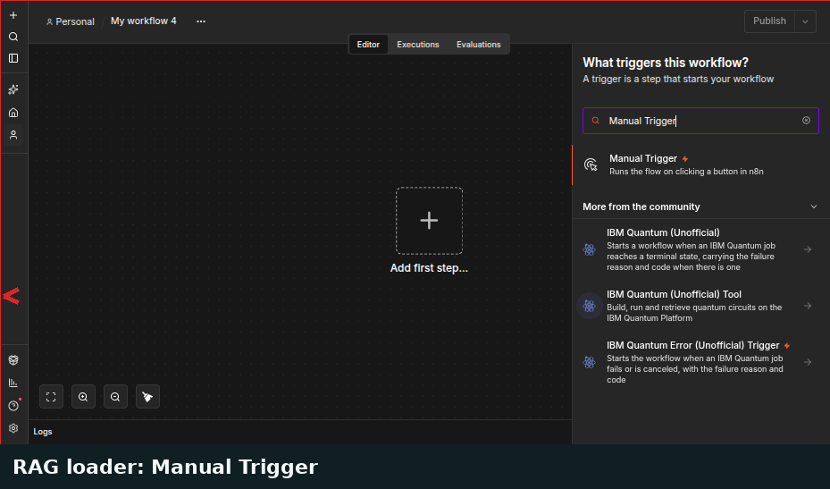
FAQ loader starts with Manual Trigger.
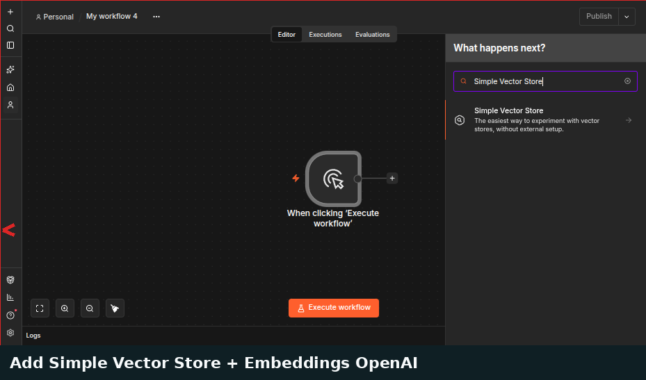
Add Simple Vector Store (+ Embeddings OpenAI).
On the chat agent, use the Tool slot for retrieval.
What you need
- Exercise 1B ideas in mind (system prompt helps a lot here)
- A short FAQ text (paste the sample below or write your own)
Sample FAQ (copy into the workflow)
Nusa Widgets FAQ
Return policy: You may return unused widgets within 30 days with a receipt. Refunds take 5–7 business days.
Shipping: Standard shipping in Indonesia is 3–5 business days. Express is 1–2 business days.
Support hours: Monday–Friday 09:00–18:00 WIB. Email support@nusawidgets.example
Warranty: All widgets have a 1-year limited warranty against manufacturing defects.
Order ID format: NW- followed by 8 digits, for example NW-12345678.Step by step — Part 1: load the FAQ into a vector store
You will build a small loader workflow (run once), then a chat workflow that retrieves.
Loader workflow
- Create workflow →
Exercise 1C — FAQ Loader. - Manual Trigger (or When clicking Test workflow).
- Add Document Default Data Loader (or Default Data Loader) → mode that accepts text / JSON.
- Paste the FAQ into the text field (or use a Set node that outputs
{ "text": "..." }and point the loader at it).
- Paste the FAQ into the text field (or use a Set node that outputs
- Add Recursive Character Text Splitter (chunk size ~400, overlap ~50) if the loader does not split for you — connect loader → splitter as your n8n version expects.
- Add Embeddings OpenAI (sub-node / connected embeddings):
- Same OpenAI credential
- Model e.g.
text-embedding-3-small
- Add Simple Vector Store / In-Memory Vector Store in insert mode:
- Memory key / index name: e.g.
nusa_faq - Connect documents + embeddings as the UI requires
- Memory key / index name: e.g.
- Save → Execute workflow once. Confirm it finishes without errors.
In-memory stores reset when n8n restarts. Re-run the loader after a restart. That is fine for class.
Step by step — Part 2: chat with retrieval
- Create workflow →
Exercise 1C — FAQ Chat (RAG). - Chat Trigger → AI Agent.
- System message example:
You are Nusa Widgets support. Answer ONLY using the retrieved FAQ context.
If the answer is not in the context, say you do not know and suggest emailing support@nusawidgets.example.
Do not invent policies, prices, or order IDs.- Chat Model: OpenAI Chat Model (or your substitute).
- Memory: optional Window Buffer Memory (nice, not required for the RAG lesson).
- Add a tool or retriever for the vector store:
- Prefer Vector Store tool / Answer questions with a vector store pattern for your n8n version:
- Tool description:
Search the Nusa Widgets FAQ. Use for any product, shipping, warranty, or returns question. - Same memory key:
nusa_faq - Embeddings: Embeddings OpenAI (same as loader)
- Tool description:
- Prefer Vector Store tool / Answer questions with a vector store pattern for your n8n version:
- If your build uses Retriever + chain instead of Agent+Tool, use that equivalent: question → retrieve top K chunks → stuff into prompt → generate. Same idea.
- Save → Open chat.
Test script
What is your return policy?→ should match the FAQ.How fast is express shipping?→ from FAQ.What is the CEO’s favorite food?→ should refuse / say not in docs.
Remember
[Once] Manual Trigger → Load FAQ text → Split → Embeddings → Insert In-Memory Vector Store
[Chat] Chat Trigger → AI Agent
├─ Chat Model
├─ (optional) Memory
└─ Vector Store tool / retriever (same index + embeddings)Done when
What you just learned
RAG = retrieve relevant chunks with embeddings, then generate an answer grounded in those chunks.
Exercise 1D — Tool-using agent harness (n8n-local tools only)
Goal: Let the model decide when to call tools. Use only tools that need no third-party search APIs: Calculator, Code, Think, and optionally Call n8n Workflow or Vector Store (your FAQ from 1C).
Concepts: tool calling / agent loop, when to compute vs retrieve vs just chat.
APIs: Chat model only (OpenAI in the example). Tools run inside n8n.
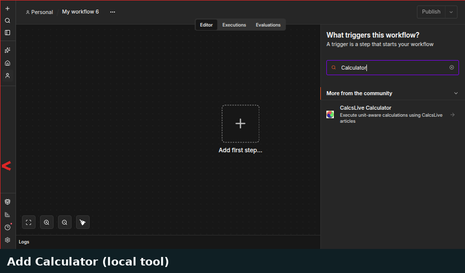
Add Calculator (local tool).
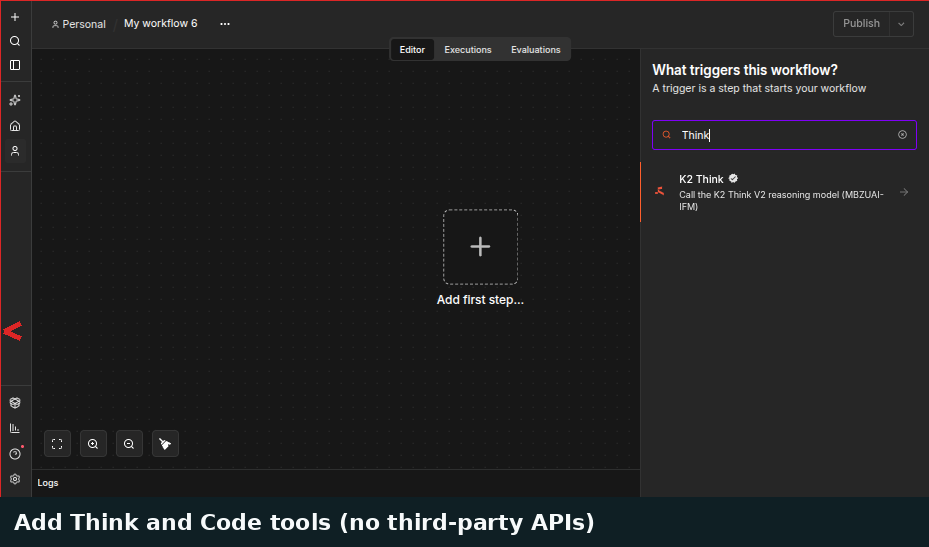
Also add Think / Code.
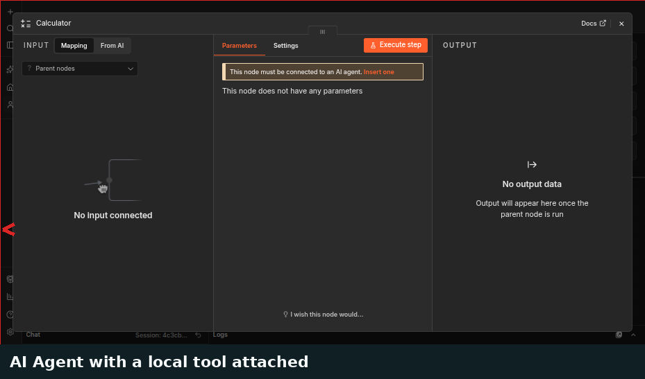
AI Agent with a local tool attached.
n8n tools used here (no Exa/Google/Wikipedia)
| Tool | What it is for |
|---|---|
| Calculator | Arithmetic the model should not guess |
| Code | Small JavaScript snippets the agent may run |
| Think | Scratchpad / reasoning step (no side effects) |
| Call n8n Workflow (optional) | Call another workflow you built (e.g. FAQ helper) |
| Vector Store tool (optional) | Reuse the nusa_faq index from 1C |
Skip for 1D: HTTP Request, Wikipedia, SerpAPI, Wolfram, etc.
Step by step
- Duplicate Exercise 1B → rename
Exercise 1D — Local Tools Agent. - Keep Chat Trigger → AI Agent + Chat Model + (optional) Memory + a clear System Message, e.g.:
You are a careful class demo agent.
- For math, you MUST use the Calculator tool.
- For tiny data transforms or parsing, you may use the Code tool.
- Use the Think tool to plan briefly when the user asks a multi-step question.
- If a Vector Store / FAQ tool is connected, use it for Nusa Widgets policy questions.
- Otherwise answer normally.
Show short answers. Prefer tools over guessing numbers.- On AI Agent → + under Tool → add Calculator.
- + Tool → Code (allow enough to run simple JS; keep it minimal for class).
- + Tool → Think.
- Optional: + Tool → Vector Store pointing at
nusa_faq(from 1C) or Call n8n Workflow that returns FAQ text. - Save → Open chat.
Test script
What is (17 * 19) + 3.5?→ should show Calculator in Executions.Think step-by-step: I have 3 boxes of 12 and give away 5. How many left?→ Think and/or Calculator.- (If FAQ tool connected)
How long is the widget warranty?→ Vector Store / Workflow tool. Just say hi→ no tool required.
Remember
Chat Trigger → AI Agent
├─ Chat Model (OpenAI / Ollama / Claude)
├─ Memory (optional)
├─ Calculator
├─ Code
├─ Think
└─ (optional) Vector Store or Call n8n WorkflowDone when
What you just learned
An agent harness = instructions + (optional) memory + tools the model can choose.
Roadmap after 1D
- Exercise 1E shows what happens when memory is tiny (context loss) and how compaction fixes it.
- Exercise 2 moves the chat channel to Telegram (polling) — still no external search tools.
- Exercise 3 adds external tools (weather, Wikipedia, Exa, Google).
Exercise 1E — Context window, forgetting, and compaction
Goal: Feel context loss on purpose (without waiting for a 128k model window to fill), then fix it with compaction (summarize old turns, keep recent turns raw).
Concepts: context window vs memory window, truncation vs compaction, summary + recent tail.
APIs: Chat provider only (OpenAI in the example). No Exa/Google/Wikipedia.
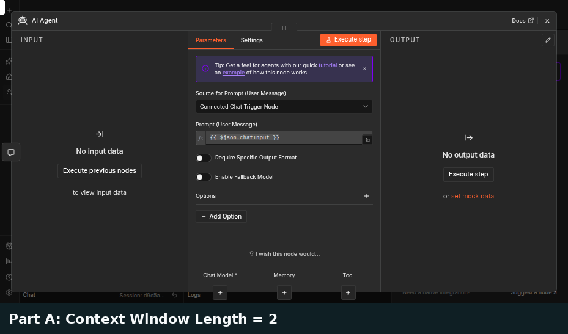
Part A: set Context Window Length to 2.
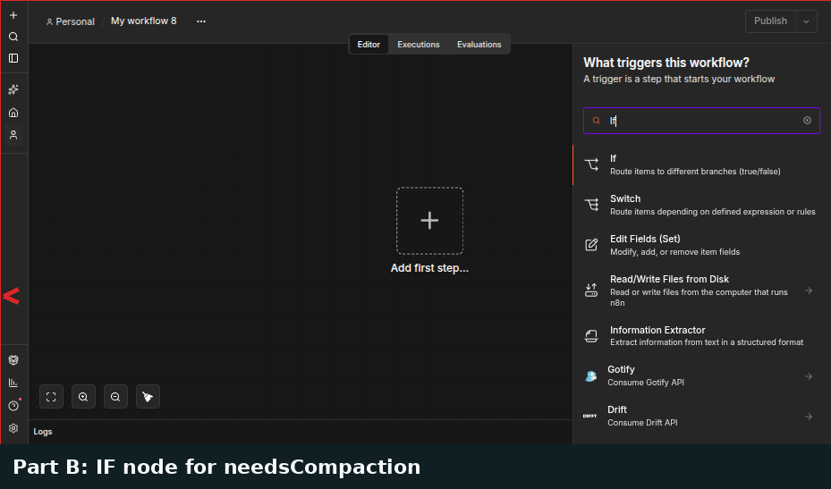
Part B: IF for needsCompaction.
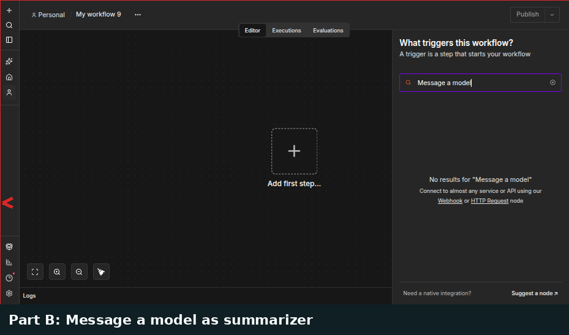
Part B: Message a model as summarizer.
Can we make OpenAI’s context window “super small”?
Not the model’s hard limit. The OpenAI API does not let you shrink gpt-4o-mini’s real context ceiling for class demos. max_tokens / max completion length only caps the reply size, not how much history the model can see.
Yes for the harness (what we want in class). n8n’s Window Buffer Memory only keeps the last N messages. Set N tiny (e.g. 2) and the bot will forget early facts after a few turns — same symptom as blowing a context budget, in under a minute.
Optional extra (Part A advanced): a Code node that also enforces a tiny character budget on history before the model call. Still a simulation — but very clear for students.
Part A — Break it: tiny memory window (experience forgetting)
- Duplicate Exercise 1B → rename
Exercise 1E-A — Tiny Window (forget). - Keep Chat Trigger → AI Agent + OpenAI Chat Model + system message (persona is fine).
- On Window Buffer Memory, set Context Window Length to
2
(wording may be “context window length” / “window size” — use the smallest value the UI allows that still means “only a couple of recent messages”). - Save → Open chat. Use a fresh chat session if the panel has old memory (new workflow usually starts clean).
Script (same chat panel, in order):
Remember this secret code: BLUE-ORCA-77. My name is Sari.What is the secret code and my name?
→ should still work (recent).- Send three filler turns, one at a time:
Tell me a fun fact about coffee.Tell me a fun fact about Java.Tell me a fun fact about Bandung.
What is the secret code and my name?
→ should fail or guess — the early turns were dropped, not compacted.
In Executions, you are not looking for a model error; you are looking for a confident wrong/empty memory after fillers.
What you just saw: truncation (“keep last N, delete the rest”). That is not compaction.
Part B — Fix it: compaction (summary + recent tail)
We stop relying on tiny Window Buffer Memory alone. Instead we keep:
- a rolling
summaryof older conversation, and - only the last few raw turns
When raw history gets long, we call the model once to compact old turns into the summary.
- Create workflow →
Exercise 1E-B — Compaction. - Chat Trigger as the first node.
- Add a Code node (mode: Run Once for All Items). Paste:
const staticData = $getWorkflowStaticData('global');
const sessionKey = 'default'; // fine for one Open-chat panel in class
if (!staticData.sessions) staticData.sessions = {};
if (!staticData.sessions[sessionKey]) {
staticData.sessions[sessionKey] = { summary: '', recent: [] };
}
const session = staticData.sessions[sessionKey];
const userText = items[0].json.chatInput || items[0].json.message?.text || '';
// Tunables for class — keep these SMALL so compaction happens quickly
const MAX_RECENT_MESSAGES = 4; // raw turns kept (user+assistant count as separate)
const COMPACT_WHEN_RECENT_REACHES = 4;
session.recent.push({ role: 'user', content: userText });
const needsCompaction = session.recent.length >= COMPACT_WHEN_RECENT_REACHES;
return [
{
json: {
userText,
summary: session.summary || '(none yet)',
recent: session.recent,
needsCompaction,
// text blob for the summarizer
recentTranscript: session.recent
.map((m) => `${m.role.toUpperCase()}: ${m.content}`)
.join('\n'),
},
},
];- Add an IF node:
needsCompactionis true.
True branch — compact:
- OpenAI → Message a model (summarizer):
- System / instructions:
Compress the conversation below into a short memory note for a chatbot.
Keep names, secret codes, preferences, and decisions. Drop chit-chat and fun facts.
Max 8 bullet points. Do not invent facts.- User message / prompt:
Existing summary:
{{ $json.summary }}
New turns to fold in:
{{ $json.recentTranscript }}- Code node after summarizer (Run Once for All Items):
const staticData = $getWorkflowStaticData('global');
const session = staticData.sessions.default;
const summary =
items[0].json.message?.content ||
items[0].json.text ||
items[0].json.output ||
JSON.stringify(items[0].json);
// Keep only the latest 2 raw messages; older content now lives in summary
session.summary = String(summary);
session.recent = session.recent.slice(-2);
return [
{
json: {
userText: session.recent[session.recent.length - 1]?.content || '',
summary: session.summary,
recentTranscript: session.recent
.map((m) => `${m.role.toUpperCase()}: ${m.content}`)
.join('\n'),
needsCompaction: false,
},
},
];False branch — no compact: pass the first Code node’s JSON through (or connect IF false directly toward the reply model).
- Merge both branches (or connect both into the same next node) → OpenAI → Message a model (the actual chatbot):
You are a helpful assistant with compacted memory.
Long-term summary (may be empty at first):
{{ $json.summary }}
Recent raw turns:
{{ $json.recentTranscript }}
Answer the latest user message. Trust the summary for older facts.Map the latest user line if your node needs a separate “user message” field: {{ $json.userText }}.
- Final Code node to store the assistant reply into
recent:
const staticData = $getWorkflowStaticData('global');
const session = staticData.sessions.default;
const reply =
items[0].json.message?.content ||
items[0].json.text ||
items[0].json.output ||
'';
session.recent.push({ role: 'assistant', content: String(reply) });
return [{ json: { reply, summary: session.summary, recent: session.recent } }];Chat Trigger workflows often show the last node’s text in Open chat. If the panel does not show
reply, add a tiny Set node that outputs{ "output": "={{ $json.reply }}" }or map whatever field your Chat setup expects.
- Save → Open chat (fresh session; or reset by temporarily changing
sessionKeyin the first Code node).
Part B test script (same panel)
Remember this secret code: BLUE-ORCA-77. My name is Sari.- Filler: coffee / Java / Bandung fun facts (same as Part A) — enough turns to trigger compaction.
- In Executions, confirm a summarizer OpenAI call ran when
needsCompactionwas true. What is the secret code and my name?
→ should work again, because BLUE-ORCA-77 and Sari live in the summary, not only in dropped raw turns.
Remember
Part A (break): AI Agent + Window Buffer Memory(N=2) → old turns deleted
Part B (fix): Code history
→ IF long enough → OpenAI summarize → shrink recent + update summary
→ OpenAI reply using (summary + recent tail)
→ Code store assistant replyDone when
Teaching note
Production systems also watch token budgets (not just message counts). For class, message-count thresholds are enough to feel the failure and the fix without waiting for a huge OpenAI context window.
Exercise 2 — Telegram bot via polling (no tools yet)
Goal: Chat with your OpenAI bot in Telegram instead of n8n’s Chat UI, using polling like a normal BotFather script on this machine.
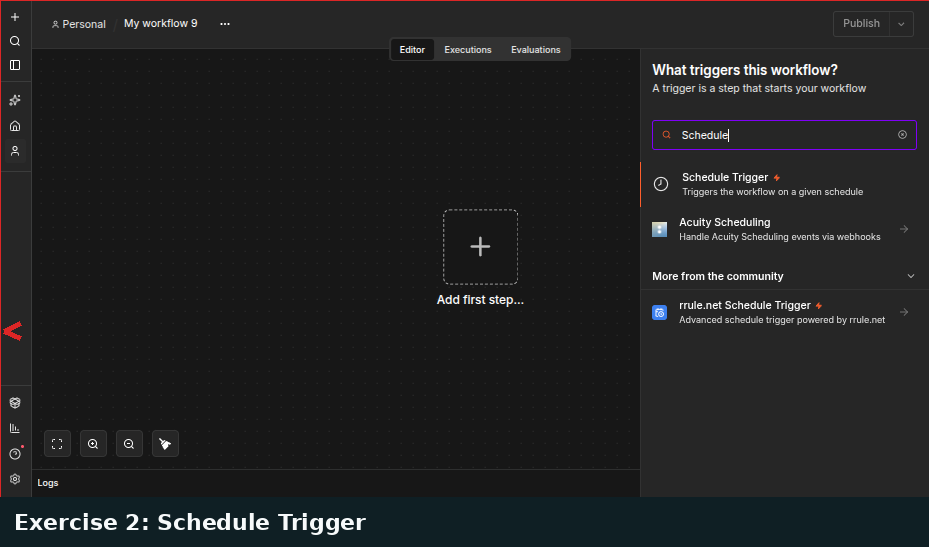
Schedule Trigger for polling.
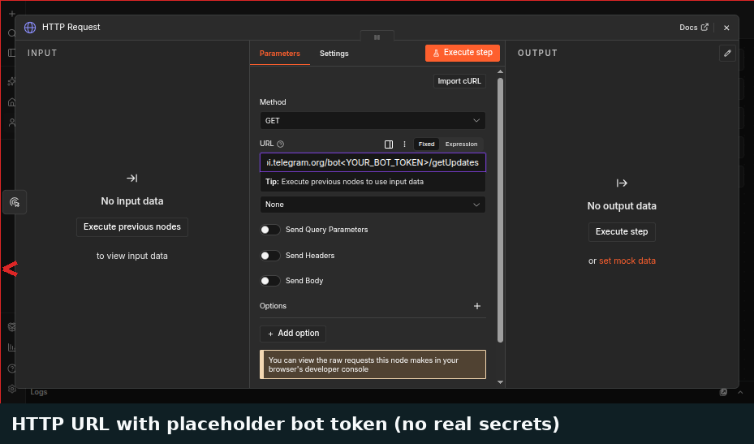
HTTP Request getUpdates with placeholder token only.
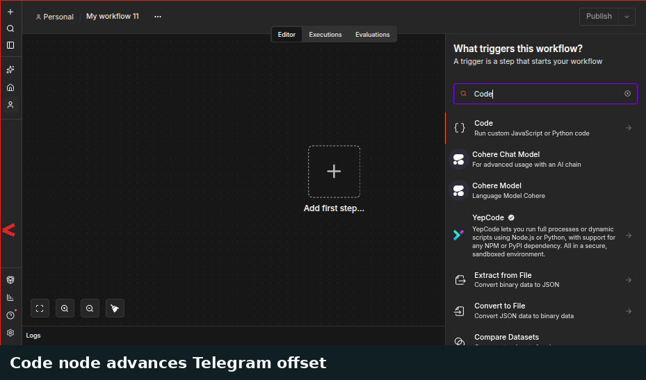
Code node advances Telegram offset.
Focus of this exercise: Telegram receive + reply only. Do not add tools yet — that is Exercise 3.
Polling vs webhooks (why this class uses polling)
Same BotFather bot + API token either way. What changes is how new messages arrive:
Polling (getUpdates) — this exercise |
Webhooks (n8n’s built-in Telegram Trigger) | |
|---|---|---|
| Who calls whom | Your n8n repeatedly asks Telegram: “any new messages?” | Telegram POSTs into your n8n URL when a message arrives |
| Public URL / tunnel? | Not needed (only outbound HTTPS to api.telegram.org) |
Required — Telegram must reach your host |
| Feels like | A local script with a bot token on this computer | A public HTTP endpoint waiting for Telegram |
| Pros | Simple LAN deploy; no tunnel; matches scripts many people already know | Instant delivery; no schedule interval; less “busy waiting” |
| Cons | Small delay (poll interval); you must track offset; slightly more nodes |
Needs HTTPS tunnel or public host; harder for classroom LAN boxes |
We use polling here so a LAN-only n8n (e.g. http://192.168.1.247:5678) works without a tunnel.
Note: n8n’s Telegram Trigger node is webhook-based. For polling we use Schedule Trigger + HTTP Request →
getUpdates, then Telegram → Send a text message for replies. Same token.
What you need
- Exercises 1A–1E recommended first (at least 1A so you have an OpenAI — or other — credential in n8n)
- Telegram on your phone
- Outbound internet from the n8n host to
api.telegram.org(normal home/office internet is enough — no inbound port open)
Part A — Create a Telegram bot
- In Telegram, open @BotFather.
- Send
/newbot. - Follow the prompts (display name + username ending in
bot). - Copy the HTTP API token. Treat it like a password.
Part B — Add Telegram credentials in n8n
- In n8n, open Credentials.
- Add credential → Telegram → Telegram API.
- Paste the bot token → Save.
Part C — One-time: clear any old webhook
If this bot token was ever used with a webhook, polling will fail until you clear it.
- New temporary workflow (or a one-off manual run): Manual Trigger → HTTP Request.
- Method
GET, URL (paste your token):
https://api.telegram.org/bot<YOUR_BOT_TOKEN>/deleteWebhook- Execute once. You want
"ok": truein the response. - You can delete that tiny workflow afterward.
Part D — Build the polling workflow
- Create workflow → rename to
Exercise 2 — Telegram Chat (polling). - Add first step → Schedule Trigger.
- Interval: every 5 seconds (fine for class; raise to 10–15s if you want less load).
- Click + → HTTP Request (this is the poll):
- Method:
GET - URL:
- Method:
https://api.telegram.org/bot<YOUR_BOT_TOKEN>/getUpdates- Send Query Parameters → add:
| Name | Value |
|---|---|
timeout |
0 |
limit |
10 |
offset |
(expression — see below) |
For offset, switch the value to expression mode and paste:
={{ $getWorkflowStaticData('global').offset || '' }}That reuses the last acknowledged update id (same idea as offset in a polling script). Leave it empty on the first run.
- Click + → Code node (split updates + advance offset). Mode: Run Once for All Items. Paste:
const staticData = $getWorkflowStaticData('global');
const body = items[0].json;
const updates = Array.isArray(body.result) ? body.result : [];
if (updates.length === 0) {
return [];
}
const maxId = Math.max(...updates.map((u) => u.update_id));
staticData.offset = maxId + 1;
return updates
.filter((u) => u.message && u.message.text)
.map((u) => ({ json: u }));- Click + → OpenAI → Message a model (same idea as Exercise 1A — no AI Agent / no tools yet).
- Use your existing OpenAI credential; model e.g.
gpt-4o-mini. - Prompt / message:
={{ $json.message.text }}
- Use your existing OpenAI credential; model e.g.
- Click + → Telegram → Send a text message:
| Field | Value |
|---|---|
| Credential | your Telegram credential |
| Chat ID | ={{ $('Code').item.json.message.chat.id }} (or pick it from the Code node in the mapper) |
| Text | map the OpenAI reply (often ={{ $json.message.content }} or whatever field your Message-a-model node outputs — use the mapper) |
- Save → toggle Active.
Empty polls return no items from the Code node, so OpenAI/Telegram simply do not run — that is expected.
Part E — Test in Telegram
- Open your bot → Start.
- Send
hi→ you should get a normal OpenAI reply within ~5 seconds. - Confirm in Executions that message runs go Schedule → HTTP → Code → OpenAI → Telegram.
Remember this sequence
Schedule Trigger (every 5s)
→ HTTP getUpdates (polling)
→ Code (emit new messages, bump offset)
→ OpenAI Message a model
→ Telegram Send MessageDone when
Why this matters before Exercise 3
You now have a reliable Telegram loop. Exercise 3 only adds tools on top of that loop.
Exercise 3 — Tools: weather, Wikipedia, Exa, and Google
Goal: Upgrade the Telegram bot so the model can call tools. Students should be able to say things like:
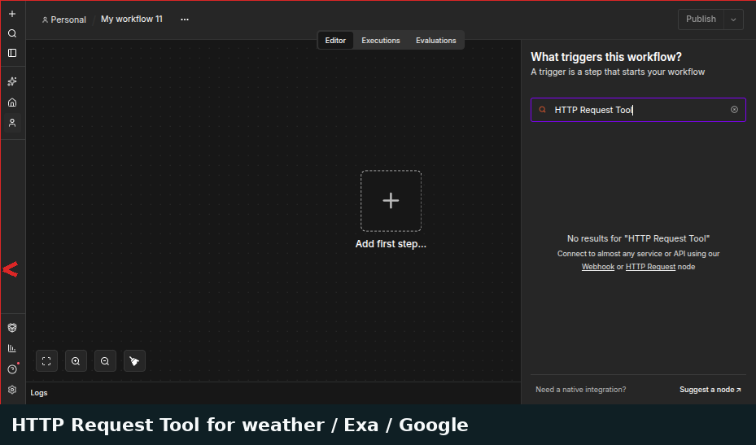
HTTP Request Tool for weather / Exa / Google.
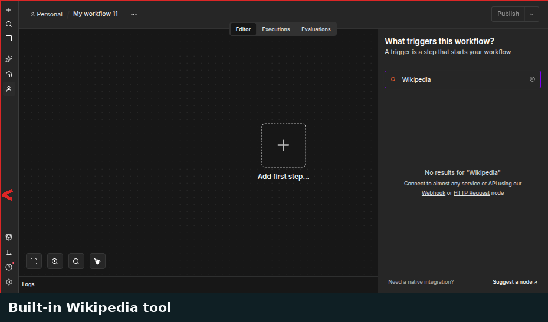
Built-in Wikipedia tool.
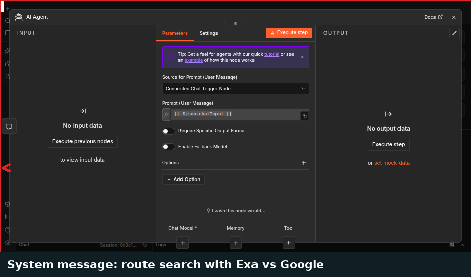
System message routes Exa vs Google.
- “What’s the weather in Jakarta?”
- “Wikipedia: n8n”
- “Search with Exa: latest RAG papers”
- “Search with Google: n8n telegram polling”
Tools in this exercise
| Tool | How in n8n | Extra signup? |
|---|---|---|
| Weather | HTTP Request Tool → Open-Meteo | No |
| Wikipedia | Built-in Wikipedia tool | No |
| Exa search | HTTP Request Tool → Exa API | Yes — Exa API key |
| Google search | HTTP Request Tool → Google Custom Search JSON API | Yes — Google API key + Search Engine ID (cx) |
Part A — Register for Exa (API key)
- Open https://exa.ai → Sign up / Get started (email or supported SSO).
- Verify email if asked.
- Open the dashboard API keys page: https://dashboard.exa.ai/api-keys
- Create / Generate an API key. Copy it once; store it somewhere private (password manager). Do not paste it into group chats or commit it to git.
- Free tier is enough for class demos (quota is limited — don’t loop searches in a tight schedule).
Optional onboarding that generates sample snippets: https://dashboard.exa.ai/onboarding
Part B — Register for Google Custom Search (HTTP “search with Google”)
Google does not offer an anonymous “just scrape google.com” API. For class we use the official Custom Search JSON API over HTTP:
- Open https://console.cloud.google.com/ and create/select a project (e.g.
n8n-class). - Go to APIs & Services → Library → search Custom Search API → Enable.
- APIs & Services → Credentials → Create credentials → API key. Copy the key. (Optionally restrict it to Custom Search API.)
- Create a programmable search engine: https://programmablesearchengine.google.com/
- Add a search engine.
- Under setup, turn on Search the entire web (wording may be “Search the entire web” / similar).
- Open the engine → copy the Search engine ID (
cx).
- You now have two secrets: Google API key and
cx. Keep both private.
Test outside n8n (optional):
curl -sS "https://www.googleapis.com/customsearch/v1?key=GOOGLE_API_KEY&cx=SEARCH_ENGINE_ID&q=n8n"You want JSON with an items array.
Part C — Duplicate Exercise 2 and swap in an AI Agent
- Open your Exercise 2 workflow → menu → Duplicate → rename to
Exercise 3 — Telegram + Tools. - Deactivate Exercise 2 (only one polling workflow should own the bot token at a time).
- Delete the OpenAI Message a model node (keep Schedule → HTTP getUpdates → Code → … → Telegram Send).
- Between Code and Telegram Send, add AI Agent.
- Wire: Code → AI Agent → Telegram Send Message.
- AI Agent:
- User message:
={{ $json.message.text }} - System message:
- User message:
You are a helpful class demo assistant on Telegram with tools.
Routing rules (follow strictly):
- If the user asks about weather or temperature for a place → call get_weather.
Pass latitude and longitude. If they only give a city, use well-known coordinates
(Jakarta ≈ -6.2,106.8; Singapore ≈ 1.35,103.82; Bandung ≈ -6.9,107.6).
- If the user asks for an encyclopedia-style fact, or says "wikipedia" → call wikipedia.
- If the user says "search with exa" / "exa search" / "use exa" → call search_with_exa with their query.
- If the user says "search with google" / "google search" / "use google" → call search_with_google with their query.
- If they ask to "search the web" without naming a backend, prefer search_with_exa.
- Do not call both Exa and Google unless the user asked for both.
- For normal chit-chat, call no tools.
Keep Telegram replies concise. Cite 2–3 titles/URLs when you used a search tool.- On AI Agent → + under Chat Model → OpenAI Chat Model → your OpenAI credential → e.g.
gpt-4o-mini. - Telegram Send a text message text field:
={{ $json.output }}(agent output). Chat ID still from the Code node.
Part D — Attach the four tools
On the AI Agent, add four tools under Tool:
1) get_weather — HTTP Request Tool → Open-Meteo
| Field | Value |
|---|---|
| Name | get_weather |
| Description | Get current weather for latitude/longitude via Open-Meteo. Use for weather or temperature questions. |
| Method | GET |
| URL | https://api.open-meteo.com/v1/forecast |
Query parameters:
| Name | Value |
|---|---|
latitude |
from AI |
longitude |
from AI |
current |
temperature_2m,weather_code,wind_speed_10m (fixed) |
timezone |
auto (fixed) |
2) wikipedia — built-in Wikipedia tool
- AI Agent → + Tool → Wikipedia.
- Leave defaults (or set a clear tool description if the UI asks). Name it clearly if you can, e.g. description:
Look up a topic on Wikipedia.
3) search_with_exa — HTTP Request Tool → Exa
| Field | Value |
|---|---|
| Name | search_with_exa |
| Description | Web search via Exa. Use when the user says search with Exa / exa search, or asks to search the web without naming Google. |
| Method | POST |
| URL | https://api.exa.ai/search |
Headers:
| Name | Value |
|---|---|
Content-Type |
application/json |
Authorization |
Bearer <YOUR_EXA_API_KEY> |
Better for class hygiene: create an n8n Header Auth credential with
Authorization=Bearer …and select it on the tool, instead of pasting the key into the canvas.
JSON body (enable JSON / raw body; mark query as filled by the model):
{
"query": "{query}",
"type": "auto",
"numResults": 5,
"contents": { "highlights": true }
}If your n8n HTTP Request Tool uses “AI placeholders” / “Using fields below”, define one AI field query (string) and keep type, numResults, and contents fixed as above.
4) search_with_google — HTTP Request Tool → Google Custom Search
| Field | Value |
|---|---|
| Name | search_with_google |
| Description | Web search via Google Custom Search API. Use only when the user says search with Google / google search / use google. |
| Method | GET |
| URL | https://www.googleapis.com/customsearch/v1 |
Query parameters:
| Name | Value |
|---|---|
key |
your Google API key (fixed; prefer a credential / expression from env if you set one) |
cx |
your Search Engine ID (fixed) |
q |
from AI (the search query) |
num |
5 (fixed) |
Part E — Activate and test
- Save → toggle Exercise 3 Active (Exercise 2 must stay inactive).
- In Telegram, try:
hi
What's the weather in Jakarta right now?
Wikipedia: Kubernetes
Search with Exa: latest techniques for RAG evaluation
Search with Google: n8n telegram bot polling- In n8n → Executions, open each run and confirm the matching tool fired (weather → Open-Meteo; Exa →
api.exa.ai; Google →googleapis.com; Wikipedia → Wikipedia tool).
Remember this sequence
Schedule → getUpdates → Code
→ AI Agent
├─ OpenAI Chat Model
├─ get_weather (Open-Meteo HTTP)
├─ Wikipedia
├─ search_with_exa (Exa HTTP)
└─ search_with_google (Google Custom Search HTTP)
→ Telegram Send MessageDone when
Teaching note
Exa and Google are both “search the web over HTTP,” but different products. Forcing the student to say search with Exa vs search with Google makes tool-routing visible in class.
Troubleshooting
| Symptom | Likely cause | Fix |
|---|---|---|
UI works on server with localhost but not from phone |
Using 127.0.0.1 / wrong IP / different Wi‑Fi |
Use the host’s LAN IP; same subnet |
| Login cookie does not stick | HTTPS-only cookies over HTTP | Keep N8N_SECURE_COOKIE=false for LAN HTTP |
Webhooks show localhost |
Missing WEBHOOK_URL |
Set WEBHOOK_URL=http://YOUR_LAN_IP:5678/ and restart (editor links; not required for Telegram polling) |
| Telegram polling returns no messages / Conflict | Webhook still set on that bot | Run deleteWebhook once (Exercise 2 Part C), then poll again |
| Bot replies duplicate messages | offset not advanced |
Confirm Code node sets staticData.offset = maxId + 1 |
| Two workflows fight over one bot | Exercise 2 and 3 both Active | Keep only one polling workflow Active |
| Poll runs but AI never fires | No message.text or empty result |
Send plain text; empty polls are normal |
| Agent calls the wrong search tool | Vague user wording / weak descriptions | Say “search with Exa” or “search with Google”; tighten tool descriptions + system message |
Exa 401 |
Bad/missing API key | Recheck Authorization: Bearer … or Header Auth credential |
Google 403 / API key not valid |
Custom Search API not enabled or wrong key/cx |
Enable API; confirm key + Search Engine ID; test with curl |
Google returns no items |
Engine not set to search the web | Edit the programmable search engine → search entire web |
| Agent never calls weather tool | Weak system message | Ask explicitly about weather for a city |
EACCES writing config |
Volume ownership | chown / podman unshare chown on data (UID 1000) |
| Port already in use | Something else on 5678 | ss -tlnp | grep 5678 and stop the other process or change the host port mapping |
| Python runner warning in logs | Optional Python runner missing | Safe to ignore for basic JS workflows |
Security notes for class
- This class stack stays on LAN HTTP for the editor. Exercises 2–3 use Telegram polling (outbound only) — no need to expose n8n to the public internet for those exercises.
- Treat
./dataas sensitive (credentials encryption key + workflow secrets). Never commit bot tokens, OpenAI keys, Exa keys, or Google keys (prefer Credentials UI; if a token appears in an HTTP URL for teaching, rotate it after class). - Prefer a dedicated class password; rotate after the course if the machine is shared.
Repo layout
n8n-class/
├── README.md ← this guide
├── docker-compose.yml ← one-service stack
├── .env.example ← copy to .env
└── .gitignore ← ignores .env and data/Questions during class: keep the server IP written on the board as a short URL students can type — e.g. http://192.168.1.247:5678.